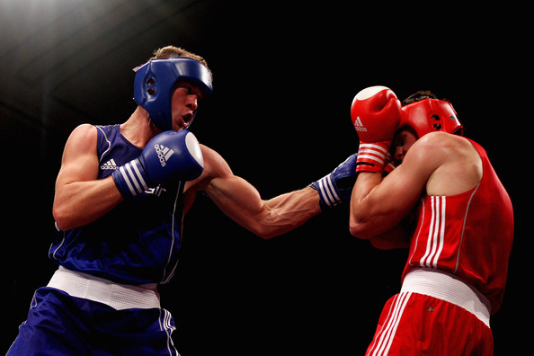
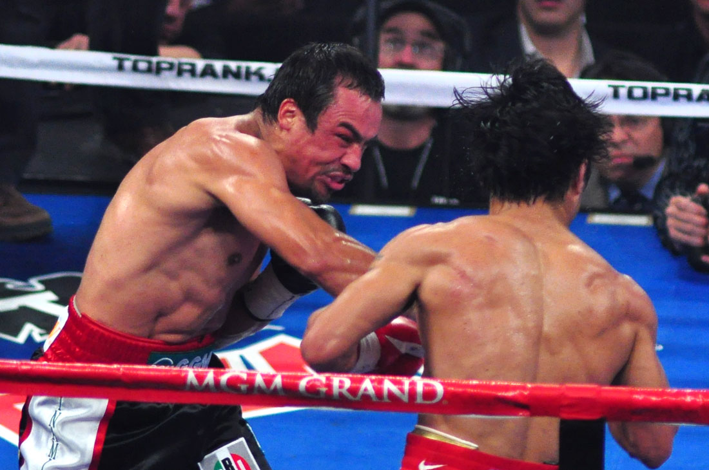

Boxing is a combat sport in which a fighter uses his fists to throw strikes in an attempt to knock out his opponent. Boxing can be traced back as early as 675 BC in Greece, and was acknowledged as an Olympic sport in 688 BC. Nearly every UFC fighter has some boxing training in order to develop his striking skills and some techniques have been modified in MMA. Because boxers stand up straight and fight with their hands, they are not protecting their torso to prevent a take down. UFC fighters have to keep their arms closer to their torso to prevent such vulnerability.
Amateur Boxing

Amateur boxing may be found at the collegiate level, at the Olympic Games and Commonwealth Games, and in many other venues sanctioned by amateur boxing associations. Amateur boxing has a point scoring system that measures the number of clean blows landed rather than physical damage. Bouts consist of three rounds of three minutes in the Olympic and Commonwealth Games, and three rounds of three minutes in a national ABA (Amateur Boxing Association) bout, each with a one-minute interval between rounds.
Competitors wear protective headgear and gloves with a white strip or circle across the knuckle. There are cases however, where white ended gloves are not required but any solid color may be worn. The white end just is a way to make it easier for judges to score clean hits. Each competitor must have their hands properly wrapped, pre-fight, for added protection on their hands and for added cushion under the gloves. Gloves worn by the fighters must be twelve ounces in weight unless, the fighters weigh under 165 pounds, thus allowing them to wear 10 ounce gloves. A punch is considered a scoring punch only when the boxers connect with the white portion of the gloves. Each punch that lands cleanly on the head or torso with sufficient force is awarded a point. A referee monitors the fight to ensure that competitors use only legal blows. A belt worn over the torso represents the lower limit of punches - any boxer repeatedly landing low blows below the belt is disqualified. Referees also ensure that the boxers don't use holding tactics to prevent the opponent from swinging. If this occurs, the referee separates the opponents and orders them to continue boxing. Repeated holding can result in a boxer being penalized or ultimately disqualified. Referees will stop the bout if a boxer is seriously injured, if one boxer is significantly dominating the other or if the score is severely imbalanced. Amateur bouts which end this way may be noted as "RSC" (referee stopped contest) with notations for an outclassed opponent (RSCO), outscored opponent (RSCOS), injury (RSCI) or head injury (RSCH).
Professional Boxing

Professional boxing, or prizefighting, emerged in the early twentieth century as boxing gradually attained legitimacy and became a regulated, sanctioned sport. Professional boxing bouts are fought for a purse which is divided between the boxers as determined by contract. Most professional bouts are supervised by a regulatory authority to guarantee the fighters' safety. Most high-profile bouts obtain the endorsement of a sanctioning body, which awards championship belts, establishes rules, and assigns its own judges and referee.
Professional bouts are usually much longer than amateur bouts, typically ranging from ten to twelve rounds, though four-round fights are common for less experienced fighters or club fighters. There are also some two- and three-round professional bouts, especially in Australia. Through the early twentieth century, it was common for fights to have unlimited rounds, ending only when one fighter quit, benefiting high-energy fighters like Jack Dempsey. Fifteen rounds remained the internationally recognized limit for championship fights for most of the twentieth century until the early 1980s, when the death of boxer Duk Koo Kim eventually prompted the World Boxing Council and other organizations sanctioning professional boxing to reduce the limit to twelve rounds.
Headgear is not permitted in professional bouts, and boxers are generally allowed to take much more damage before a fight is halted. At any time, the referee may stop the contest if he believes that one participant cannot defend himself due to injury. In that case, the other participant is awarded a technical knockout win. A technical knockout would also be awarded if a fighter lands a punch that opens a cut on the opponent, and the opponent is later deemed not fit to continue by a doctor because of the cut. For this reason, fighters often employ cutmen, whose job is to treat cuts between rounds so that the boxer is able to continue despite the cut. If a boxer simply quits fighting, or if his corner stops the fight, then the winning boxer is also awarded a technical knockout victory. In contrast with amateur boxing, professional male boxers have to be bare-chested.